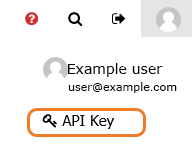
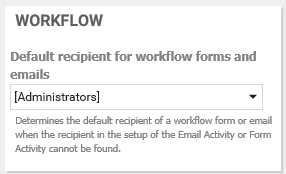

|
|
Customizing the application
If you have administrator permissions, you can customize your user interface to suit the needs of your organization.
For information on customizing asset types by defining new fields, see Defining fields on asset types.
To access the Settings page, click the Administration icon on the left side of the main screen, then select Settings.

The Settings page opens:

Tip: For many of the settings on this page, you need to click the Save Changes button on the right of the screen for your changes to take effect.
Custom Images
The options in the Custom Images panel allow you to customize some of the product images that appear in the user interface.
- Company Logo - You can substitute your company logo in place of the Infogix logo that appears in the top left corner of the screen by clicking Choose file in the Company Logo section of the Custom Images panel.

- Company web icon - You can substitute your company icon in place of the Infogix icon (favicon) that is displayed on web browser tabs by clicking Choose file in the Company Web Icon section of the Custom Images panel.

Features
The options in the Features panel allow you to customize some display options.

Some of these options hide or display items in the toolbar at the top of the application.

- Disable Discussion Posts - Disable the ability for users to post new comments or replies to the boards of other users and assets.
- Disable Take Action - Hide the Take Action button and Monitor page from the interface.
- Hide Infogix Users - Infogix users are users with an Infogix email address. You can choose if you want to display these users in the UI.
- Display API Key - When this option is selected, any user will be able to see their API key on their user profile page. If you do not select the option to display the API key (default), non-admin users will not be able to see their API key on the user profile page.

Note: Users with administrative access will always be able to see their API key, regardless of this option.
Note: It could take some time for changes to this setting to take effect.
- Maximum Dropdown Items - Define the maximum number of entries that a list field can contain before a type to filter search becomes available, enabling users to filter the list to show only the items which contain the typed text. The default maximum number of entries that a list can contain before the type to filter search is enabled is 10,000.
When a user types in the type to filter search field, the first 20 items that contain the typed text are displayed. As the user types additional text, the search is refined until the item that they are looking for is displayed. For lists that contain fewer than the maximum number of entries, users can select an item from the dropdown list.
IP Restrictions
Use the IP Restrictions panel to restrict access to the application to individual IP addresses or ranges of IP addresses. If you do not add any IP addresses then there will be no restriction and users will be able to access the environment from any IP address.

- Click the Add icon.
- Enter a name to identify the IP address or range.
- Enter addresses for the start and end of the range you want to restrict access to.
- Click Save Changes.
Workflow
Use the Workflow panel to change settings for workflow forms and emails.

- Default recipient - Select the group that will receive a workflow form or email if the recipient specified in the Email activity or Form activity cannot be found.
The available groups that you can select from by using this menu are the groups that have been created on the Administration > Security > Groups page.
- Daily email for workflow assignments - Check this box to send daily workflow summary emails to users with outstanding assignments. For more information about this setting, see Sending workflow assignment emails.
Styles
Use the Header Background/Border Color field to control the thin strip of color that separates the toolbar from the rest of the application.

Site Nav
Use the Site Nav panel to customize the order and appearance of the icons that appear on the left side of the screen.

To add a new navigation folder:
- Click Add.
- Enter a Folder Name, and select a Folder Icon from the list.
- Select that items that you want to appear in the navigation folder by adding them from the Available Folder Items list. The Existing Folder Items list shows the selected folder items.
- If you want to restrict who can view the new navigation folder, click Add in the View Permissions section to choose the users and groups who will be able to view the folder.
- Click Save to add the navigation folder.
To re-order the icons, use the up and down arrows.
To change the Folder Name, Folder Icon, or restrict who can view a folder, click the Edit icon in the corresponding row for the folder you want to change.
Home page customization
Use the Home page customization panel to modify the appearance of the default welcome screen, including adding any shortcut links to other websites.

- The Tile Options allow you to select whether to display the Your Assignments, Board and Activity panels on the home page.
- Show site title on homepage allows you to display a title on the home page in a color of your choosing.
- The Home Page Background Image updates the image that is displayed on the home page.
- Shortcuts controls the icons that are displayed on the bottom of the home page. You can specify the order of the icons and which icons to use. You can add icons that link to areas within the application, or you can link to an external location e.g. a SharePoint site. The name and description that you specify for each shortcut will be displayed under that shortcut's icon on the home page.
Search
Use the Search panel to control the search settings on the home page.

You can select a default value for the initially selected list of object types to search, and choose whether to enable exact match by default.
Note: These options control the default search on the homepage, shown below. They do not control the search function in the upper right corner of the home page.
Default route
Use the Default route panel to specify the default route that users will be redirected to when they log in to the application, for example /artifact/1.

Note: Some application settings can only be updated from the database by Infogix Engineering - for example, changing the number of minutes before a user session times out. Please contact Infogix Support to change these settings.